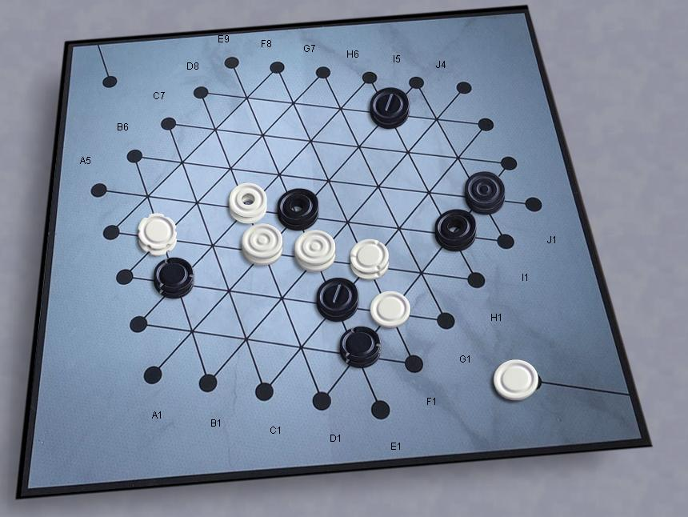

Matrx Gipf
Gipf was the first in the series and subsequent games (Tamsk, Zertz,
Yinsh, Dvonn, Punct) were delivered with mysterious additional
pieces called "Potentials". The future story for these pieces was
that they'd be used in a meta-game that linked all the games in the
series. That never quite materialized, but here we have a
new game which combines the basic ideas and mechanics from Gipf, with a
larger board and new pieces.
Read the official
rules
Robots:
Strong players haven't reported yet, but the bot is good enough to be a
challenge to beginners.
|

|